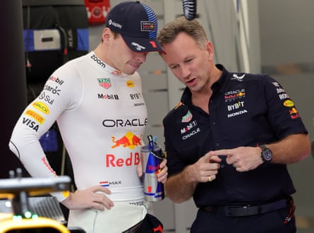

The removal of Christian Horner from his post as team principal at Red Bull represents both the end of an era in Formula One and, in the short term, the most turbulent period in the team’s history. It carries an import that will be felt right across the sport, a significance in how it played out and what happens next as the team Horner built and led to such enormous success faces an uncertain future.
Horner has been at Red Bull since the team was formed in 2005 from the ashes of Jaguar, a team in no little disarray when Red Bull bought it. Horner was at the helm as it was transformed from an operation of 450 personnel, without so much as a win to their name, to one of 1,500 today that has won eight drivers’ titles and six constructors’ championships, and is one of the most extraordinary success stories in F1 history.
Horner has never shied away from publicity and has revelled in the role of disruptor, embracing the brickbats his team received for being backed by an energy drink manufacturer, rather than a grand old motor racing marque.
“We are different at Red Bull . You won’t see anyone in a suit and tie here, it’s more jeans and T-shirt,” he said of the culture he engendered. “We don’t conform, we call it as we see it and we are not afraid to have an opinion.”
That approach did not endear him to some in the paddock but, when allied to his acute sense that F1 was about bringing in the right people and enabling them to work in the best possible way, it returned huge success.
Yet in the space of under two years – a bagatelle in F1 terms – so much has unravelled at Red Bull. Seventeen months ago as the team entered 2024 with their world champion Max Verstappen on a roll with three consecutive titles, Horner was accused of inappropriate behaviour by a female colleague.
Horner always denied any wrongdoing and was subsequently exonerated by an independent investigation and despite what were purported to be leaked text messages between Horner and the employee, he has been supported by his wife, the former Spice Girl Geri Horner, throughout.
However, as the controversy roiled it reflected yawning divisions within the team. Not least an internal power struggle between Horner and parent company, Red Bull GmbH, and between Horner and Verstappen’s father, the former F1 driver Jos Verstappen, who was openly calling for him to be sacked.
The team’s longstanding motorsport advisor Helmut Marko, a friend to the Verstappens, was at one point under threat of suspension, prompting Verstappen in turn to threaten to leave. By F1 standards this was turmoil.
Christian Horner has been involved in an internal power struggle with Max Verstappen (left) and his father Jos in recent times.Photograph: Giuseppe Cacace/EPA
Horner’s position looked to be hanging by a thread. Yet he rode it out and Red Bull GmbH backed off as the furore around the allegations died down and Horner still enjoyed the backing of Chalerm Yoovidhya, the Thai businessman who owns a 51% share of the company.
At the British Grand Prix last weekend it was business as usual, with no inkling that Yoovidhya apparently must have changed his stance and the parent company were preparing to act. At the heart of the decision it is impossible not to consider that Verstappen, a once in a generation talent, has been the key piece around which all other manoeuvring has occurred.
The world champion has repeatedly expressed his desire only for there to be calm and a focus directed solely on the performance of his car. He has been disappointed on both fronts.
Over the past two years Red Bull have lost key personnel, not least Rob Marshall as chief engineering officer followed, crucially, by Adrian Newey, the team’s genius designer , considered to be the best of his generation, who joined Aston Martin, and then Jonathan Wheatley, the sporting director.
Amid all of this the car’s performance fell away too. Last year only Verstappen’s fierce determination and an early season lead were enough to see him over the line. This season, Red Bull have been well and truly surpassed by McLaren. Verstappen’s shot at the title has already gone, while Red Bull’s second driver, Yuki Tsunoda, often struggles to so much as score points.
Verstappen has been clearly dissatisfied and while under contract until 2028 other teams are already looking to lure him away, not least Mercedes with whom he has been in talks.
Red Bull’s decision to remove Horner may well constitute an effort to keep him on board, to placate Verstappen and his father in the face of Mercedes’ advances, or indeed, as has been posited, that Verstappen has already done a deal and Horner is paying the price.
For Verstappen it is a relatively simple equation, he wants to be in the best car and will be considering his options on that basis. Next season major regulation changes will put a focus on new engines, where it is believed Mercedes have already stolen a march, while Red Bull have committed for the first time in their history to building their own engines, a hugely complex and demanding undertaking with no guarantee of success, with rumours suggesting they are behind the curve.
Which leaves Red Bull, a once formidable force, with a woeful car, in danger of losing their talismanic driver, set to enter another new era without the man who had brought them so far and in a vortex of instability. As the once mighty Williams team discovered, success is never guaranteed in F1 and Red Bull too now might consider themselves on a knife edge.